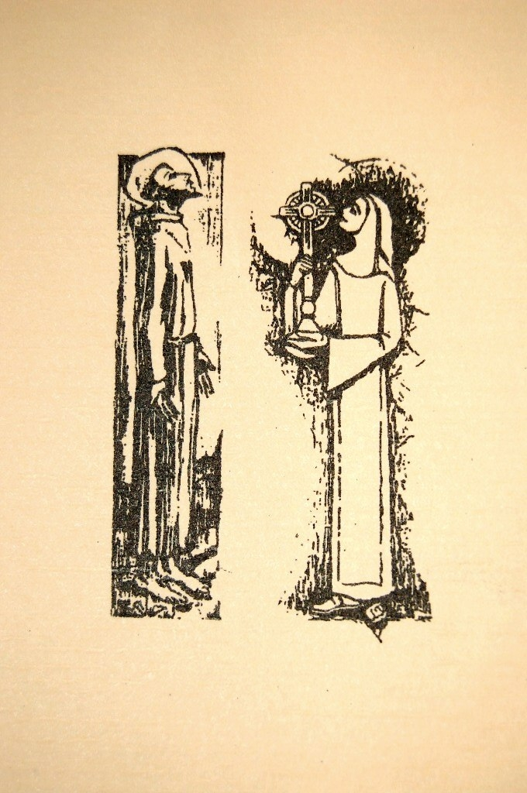
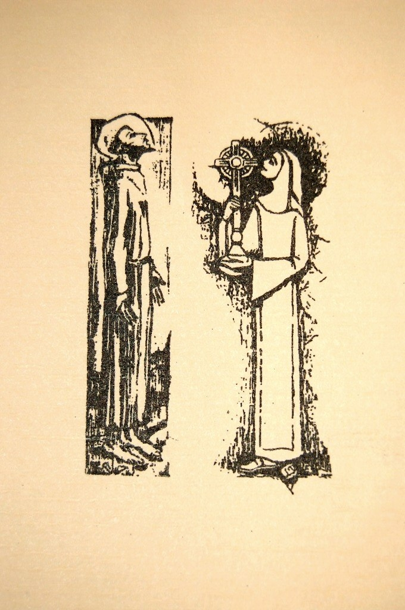

FRANCIS
OF ASSISI THE HOLY POET
"
He is the saint who sings, the saint who laughs, the saint who kisses,
who plays the violin by bowing a stick on his arm, a dancing angel.
He is the saint who joyfully sings to nature, who joyfully loves the
nature God has created. He does so not as a pantheist, but
clearly in
all things, as a gardener loves each flower in his garden for itself.
Joy! Joy! It is nothing other than music. He hangs
from God on a golden
thread, swaying back and forth with life's joy - the troubadour of God.
He is inebriated with music and joyful love.
Of all the saints, he is the poet; all his deeds are spontaneous
rhymes, his words music! And
even more than a poetic saint, one would prefer to call him a holy
poet."
Heinrich
Federer
Ins
Land der Apfelsinen 1926
Into the Land of Pineapples,
1926
Members
from Abingdon, Christiansburg, Lexington, Lynchburg, Marion, Roanoke/Salem, Rocky Mount and the New River and South Western
Virginia Areas
 
